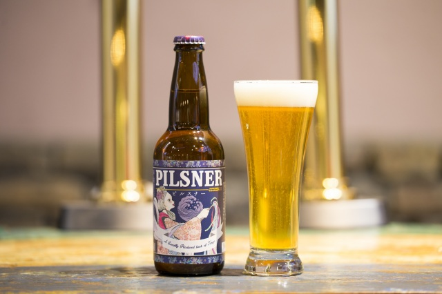
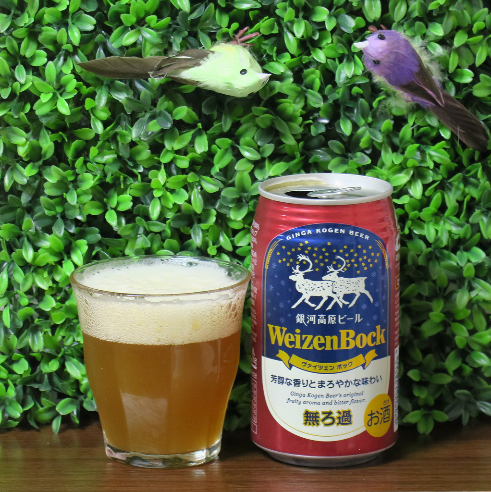
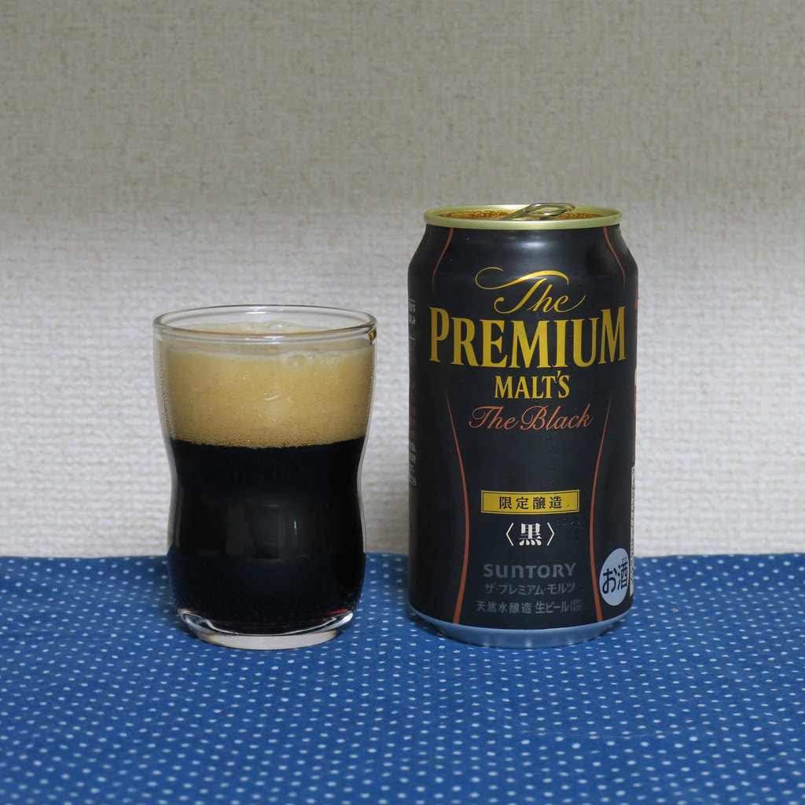

ピルスナーについてチェコのピルゼン地方を発祥とするビールのスタイル。 ホップの苦味と爽快な喉越が特徴。
もっとも美味しい温度は3~7℃である。現在世界中で販売されているアサヒスーパードライなどはすべてピルスナースタイル。
ヴァイツェンはドイツ語で小麦を意味する。 文字通り小麦麦芽を使用しておりドイツでは伝統的なビール。
バナナのようなフルーティーな香りと苦味の少ない柔らかな味が特徴。
アルコールの度数は4.5~5.5％である。

黒色で見た目もインパクトのある「黒ビール」。味の特徴はなんといっても、コクと風味の強さ。一般的なビールに比べて、濃い味わいが感じられ、深いコクが楽しめる。さらに焙煎された麦芽の香ばしさにより、豊かな風味を感じることができるビールである。
黒ビールは炭酸も弱めなのも特徴のひとつである。少しぬるめの温度にすると、香りも際立ってまろやかな味わいを楽しむことができる。
麦芽の乾燥は、淡色麦芽が80℃程度で行われるが、濃色麦芽は100〜230℃と高温。温度によって色の濃さが変化し、高温になればなるほど濃い色のビールになる。